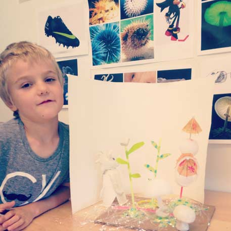
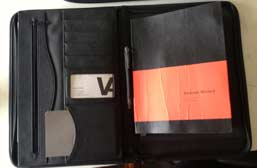
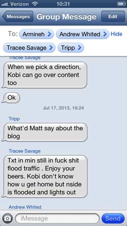

By Kobi Ansong on August 1, 2013
I was laid off and Mad Men-obsessed, when I decided it was time for a new gig. I wanted something creative that required a bit more brain usage than the typical 9 - 5. A good friend of mine was a Creative Manager at M&C Saatchi’s London office. I was attracted to the eclectic range of his projects so, one day, I Googled “Atlanta creative companies.” The first link took me to a list of 40 – 50 Atlanta agencies. In less than two days I sent emails to each one.
Ben’s email was one of very few responses that I received. When I clicked on the Iconoclasts’ link, I was welcomed with flashing red screen days, an obscure man extending a middle finger (whom I now know as Hartman), a frightening set of gold dentures, and several other odd slides and photographs.
I was convinced – I didn’t know what the hell an iconoclast was or why this site was designed to induce seizures, but I was all in.
By Kobi Ansong on August 1, 2013
Even the monsoon couldn’t dampen my spirits this morning. Today, I was an Iconoclast. What the heck am I getting myself into? were my thoughts as I cruised down the freeway. At the rooftop soiree, Matt casually mentioned that we’d be working on a few small projects for Coca-Cola, the Fifa World Cup, and the Olympics, along with hosting a party in the basement studio. No biggie.
After a quick intro meeting with the Iconologic team, I met with Juliet in the editorial office where I was briefed on some upcoming projects. The biggest project, at the moment, is Coca-Cola’s sponsorship with Fifa World Cup. She gave me a general overview about what Iconologic does because, to be honest, I still wasn’t sure. Juliet explained Iconologic’s long relationship with Coca-Cola including a former employee who is now their Design Director.
It was a great day. At noon, we packed into Ben’s monster truck and went to Eatzi’s for lunch. I was pleasantly surprised by the delightful jerk chicken.
Seems like I’m going to like this place and the people a whole bunch. What exactly will I be doing? I’ll let you know when I find out.
By Kobi Ansong on August 1, 2013
Busy, busy, busy. I have an inkling that tons of meetings are going to be a thing here. I met with my fellow Iconoclasts in order to discuss our upcoming projects: basement event, and most importantly, our Iconoclast documentation. Matt heavily suggested forming a blog, and we agreed. The idea is to host the blog on the Iconoclast site in order to give future Iconoclasts something to look at and learn from. The meeting was all over the place at first, since we’re a group of crazy creatives, but we were able to focus and develop some concrete ideas.
The next thing on our list of majorly important tasks was the farewell rooftop cookout for longtime Iconologic designer, Elise. The weather was perfect and the macaroni-n-cheese, steamy beans, juicy burgers, plump hot dogs, and the side of crispy bacon wasn’t shabby either.
Rather than my typical post cookout brew and subsequent food-comatose, I actually had work to do. Matt invited us to sit in on an impromptu meeting for a possible counter pitch to Coca-Cola. Without going into too much detail, my takeaway is that in order to succeed in this industry, you have to be an opportunist.
By Kobi Ansong on August 1, 2013
I decided to sit down with myself and reflect on what the future of Iconoclast may look like. Check out the candid (and rather unconventional) conversation below:
What will I gain from Iconoclasts?
I expect to gain an appreciation for sleep.
I will also gain valuable mentors and connections to extremely talented people. I’ll learn how to juggle multiple projects and deadlines. Iconologic is renown for recruiting the most talented young creatives in Atlanta and developing their raw skills while teaching them the biz. The most important thing that I can do as an Iconoclast is learning a lesson from every single person under this award-winning roof (seriously, the architecture here is awesome).
How should describe this experience thus far?
So far, it’s been a whirlwind. My last job was on of those come-in-at-nine-and-shut-your-brain-off-and-do-mindless-activities-until-five-and-try-your-hardest-to-make-time-move-as-fast-as-possible-but-it-never-works-because-each-day-feels-like-an-eternity type of job. It was a great place with great people, but I wasn’t being creatively challenged. At Iconologic, “being creatively challenged” is like saying China has a lot of people – it’s a massive understatement. In less than two weeks, I’ve been forced to bend my minds in ways that I never have in my entire life.
What am I looking forward to most about this experience?
More than anything, I’m looking forward to October when I’m sitting back reflecting on the things that we were able to accomplish.
By Kobi Ansong on August 1, 2013
The bloody footage is promo material for Awful Media’s Shade, a monthly party at Sound Table’s Space 2, a venue located in Downtown’s burgeoning music and party scenes, Edgewood Avenue. The July 25th party promo video was hosted by Awful Media Creative Director, Morian Thomas, our friend Tara, and myself for our birthdays. Each month Awful Media produces a promotional teaser film as an alternative to the typical party flyers.
“I chose films because its the best way to grab the attention of my generation and our ever-growing attention deficits. Thirty seconds of promo and your enthralled,” said Thomas.
Awful Media is a creative and eclectic group of music producers, visual artists, photographers, and filmmakers that combine their talents to execute the most original projects. They’ve collaborated with the likes of W Hotel, ESPNU, Universal Records, and more.
By Kobi Ansong on August 1, 2013
From July 15 - Jul 18, the Iconologic team worked hard to film a promotional video for a client. The concept was to shoot a short video that utilizes colors to tell a special story of rebirth. Here are some shots from the final day on set, enjoy.
By Kobi Ansong on August 1, 2013
An Iconoclast is a person who attacks cherished beliefs or institutions. They are radicals, gadflies, oddballs, neophytes, and revolutionaries. Steve Jobs fearlessly challenged tech’s status quo by earnestly focusing on user experience by seamlessly infusing hardware and software. Jean-Michel Basquiat never followed the standard. When graffiti artists were essentially writing their names and marking territories, Basquiat was filling walls with poetic lines full of social commentary. In a time when African-Americans were more known for their athletic skills and musical talents, Basquiat revolutionized the art world with riveting work. These men are the epitome of Iconoclasts. They were original thinkers who did what others couldn’t imagine.
The common denominator amongst these men were that they were not afraid to think differently. In a world full of cliches and redundancy, can we, the Iconoclasts of summer 2013, dare to think outside of the world’s constraints?
By Kobi Ansong on August 1, 2013
I met Evan on set of a video shoot. Iconologic enlisted Evan and his partner, Steve Dinozzi, because the video required visual effects, one of their many specialties. The concept was to shoot a short video that utilizes color to tell a special story of rebirth. When the four-day shoot was a wrap, I asked the guys some questions on camera about their experience on set for a behind-the-scenes package that we were putting together. The short conversation with Evan left me with new insight and a few quotables. So, when our site was ready for some iconoclastic content, I knew it was time for - another brief exchange with Evan Nyquist.
Evan Nyquist is an Atlanta-based digital/fine artist, according to his LinkedIn (though, I’d say the title is a bit modest). In the last four years, he’s worked with Turner Studios/Creative Services and, more recently, teamed up with Steve to do the visual FX and motion graphics on music videos for Will.i.am, Mac Miller, and Maroon 5—the latter has amassed over 19 million YouTube hits.
From Maroon 5’s Love Somebody, watch here.
Aside from film, editing, visual effects, graphic motion, design, and illustration, Evan can spit out middle school poster quotes like watermelon seeds. So much so, that Steve dubbed them “Evan’s Nike Quotes”.
“Watching a master be masterful is the pinnacle of learning.”
Yup, let it sink in.
This gem emerged while Evan explained the significance of surrounding yourself with people that you can learn from. He put it frankly: “I love being around people who are better than me.”
The idea is simple: every creative, artistic, or ambitious person should develop a relationship with someone who can be a mentor in order to maximize creative success.
Right now, Evan is prepping his canvas for something he’s never painted before—launching a business. He always knew he required creative freedom in order to be content with his career. After developing a seamless working relationship with Steve on several projects, they knew starting an agency together would be a natural move.
According to Evan, artists are supposed to possess an inherent characteristic that contaminates everything he or she touches. From a life insurance company logo to street graffiti, artists should leave their mark on all of their work. Evan calls it “style and soul”.
When I asked Evan to describe his own style and soul, the wordsmith, ironically struggled to find the right words. “I’d say sharp,” he said after several moments. “And, juicy too. Add juicy.”
Culture, creativity, and individualism were fixtures of life in Alphabet City, the East Village neighborhood where Evan spent half of his childhood. Discovering art and fresh perspectives was never a problem for a young and adventurous Evan. He even recalls the legendary Kieth Haring selling pottery outside of his home. Later in his childhood, Evan and his family relocated to Minneapolis, another progressive and artistic city that influenced his style and soul.
Some times Evan is nostalgic about the old days as a child when his art and thoughts weren’t so clouded by the outside world. He believes that people often allow the universal online culture to perpetuate trends and diminish individuality.
“If I saw art that was bad, I closed my eyes or I looked to the ceiling,” Evan said about his days as a student at SCAD. “We’re being inspired whether we want to or not.” And, Evan refuses to be inspired by anything that will not convict him to create the most provoking art possible.
By Kobi Ansong on August 1, 2013
The week of July 29 - August 2 welcomed a new breed of creative and art directors, designers, illustrators, and innovators to Iconologic’s doorsteps. They weren’t students from Portfolio Center, Creative Circus, nor SCAD. They weren’t cradling heavy portfolios full of their years worth of work. In fact, none of them even have a driver’s liscense. Design Camp brought something to Iconologic that it was missing -- an untainted and unconstrained wealth of imagination that only a child can exude.
By Kobi Ansong on August 1, 2013
On my second day at the office Juliet hit me with the task of writing an ad for Coca-Cola in the Olympic Review, the official magazine of the Olympics. Coca-who, Olympic what?, I thought. It’s easy to be intimidated by iconic names such as Coke and the Olympics, but I learned quickly that to survive at a place like Iconologic, every morning you have to leave intimidation and fear in in the car.
By Kobi Ansong on August 1, 2013
So, today’s you’re first day at Iconologic and you’re not sure what to expect. In fact, you may not even be sure what job duties are -- I know I didn’t. Well, here’s a list of the top four essentials you’ll need to make it at the infamous 40 Inwood.
Won't a Macbook suffice? Why not an iPad? Those devices are cool and, in another design world, they may even suffice. But to survive a day at Iconologic, you'll need good-ole-fashioned blank paper bound in a book along with a writing apparatus.
The creative meetings can be described as, for lack of a better word, intense. You'll be hurdled with perfectly clear objectives like "think outside the box" or "something that's never been done before". Sometimes it takes the movement of your hand on paper to keep your head from exploding.
We know what you're thinking -- "sneakers have absolutely nothing to do with being creative or being successful at a brand identity firm." Maybe you're right, but, there's one thing they never tell you about before you get here -- the stairs. Believe us, there's a lot of them.

Obviously alcohol is great, but why it's an essential is still something we haven't quite put our fingers on. Whatever the reason, Iconologic keeps the fridge and cabinets fully stocked.
Group iMessages saves lives 'round these parts.
